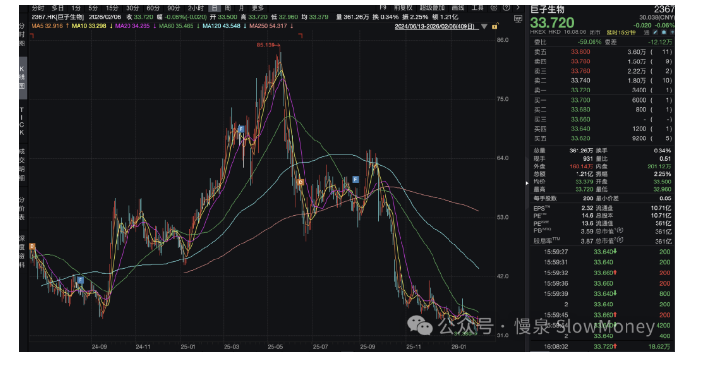
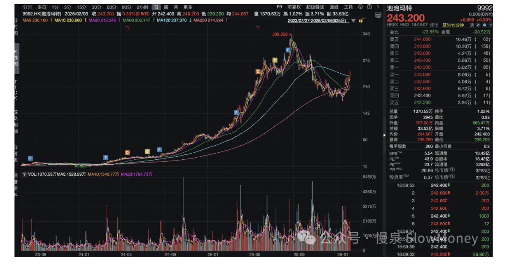
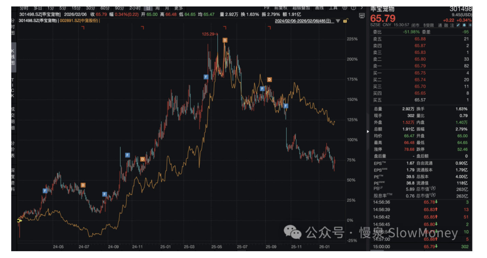
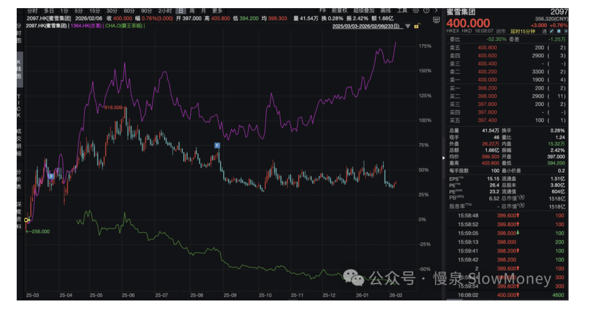

投资备忘20260208-"新"消费还能上天么
2026-02-02 — 2026-02-08 · W06 · 周度备忘（补档）
节前的市场有种被"双手"操纵的无力感——这边有队伍稳定市场，那边不时有西海岸关于新产业的鬼故事，同时不是穿插马斯克主题的各种叙事，兴奋不过来、担心也来不及。
本周市场开始进入节前模式："窄幅震荡、成交萎缩"。成长指数趋势上在下跌，深成指区间震荡下沿，上证和蓝筹指数震荡中枢附近。
投资者节前的心态类似火热的赌场——不少人想退身到赌场的门口，免得跑不掉；但又不想出去，FOMO 心态作怪。所以大家卖出算力、半导体、资源股，买入低位的消费和更火热的太空光伏。消费的起色让我想起去年以来的"新消费"概念——哪些故事怎么样了，哪些股还好么？
组合情况
本周表现基本持平全市场指数。周一市场的调整对组合产生较大的冲击——产业主题和宏观主题资产均出现较大跌幅，前者因为风格，后者因为前期涨幅较大，DA 资产明显对冲上涨，使得组合仓位稳定的情况下可以调整组合；后面几个交易日逐步修复净值。
| 类别 | 本周涨跌幅 | YTD |
|---|---|---|
| Wind 全 A | -1.50% | — |
| HS300 | -1.30% | — |
| Beta 策略 | -1.70% | +3.73% |
| Macro 策略 | -1.10% | +3.66% |
| Beta 仓位（含转债 7%） | 86% | — |
| Macro 仓位（含转债 19%） | 74% | — |
操作上，市场大幅下跌时加仓，市场反弹和稳定时消减交易仓位——交易灵活的同时，保持整体的仓位稳定。组合布局上，增加了产业主题特别是智驾机器人方向的持仓；因为上周进行止盈，本周增加宏观通胀主题的化工持仓；压降了 DA 防御资产持仓。
组合状态：宏观主题的资产回调后重新增加持仓，交易的灵活性提升；产业主题（智驾机器人和 AI 硬件）继续增加，产业创新落地和内外共振趋势明显；DA 的防御性资产阶段性下降。
那些新消费现在怎么样了
新消费：从传统的衣食住行，进化为更注重"情绪价值"、"精神慰藉"和"个性化体验"的全新赛道。投资上主要围绕情绪消费和政策驱动的服务消费展开——包括潮玩和谷子经济、宠物、茶饮、美护。
现在怎么样了
2025 年 6–9 月是阶段高点区域，市场指数普遍上涨 20%+。随着周期、算力、商业航天、机器人等主题轮番表现，资金从新消费板块退出，重点个股出现普遍下跌。




新消费的护城河
从护城河的不同层级看：
| 层级 | 内涵 | 代表与判断 |
|---|---|---|
| 功能价值 | 满足基础需求 | 最深 |
| 情绪价值 | 满足精神慰藉与个性化体验 | 较深（如泡泡） |
| 渠道变革 | 依靠新渠道获取流量 | 易被复制 |
| 消费出海 | 依靠地域扩张获取增量 | 需要产品适应不同环境 |
能够创造功能价值、情绪价值的新消费能够产生较深的护城河——比如泡泡玛特；出海需要产品适应不同环境；渠道容易复制。
是否被市场抛弃
趋势和海外经验提供更可靠的参考。重点关注：
- z 世代的消费新特征和财富积累效应；
- 人口老龄化的消费新趋势和宠物经济。
去年提醒过一次「新消费的护城河不在情绪」——半年过去了，这一判断得到了市场层面的验证：泡泡玛特继续新高，而纯情绪、纯渠道的标的已经被资金抛弃。明年再看，可能重点会落到「功能性宠物经济 + 老龄化陪伴消费」这两条上。
市场展望
三十分钟起飞，简要写下。
策略展望：（继续）震荡做交易
指数缩量震荡维持，关注海外的变化，维持总仓位基本稳定。节前组合调整到理想结构——节奏上通胀资产调回到下跌前的水平；产业主题维持；DA 资产维持。
仓位
当前的仓位主要是情绪对市场的影响，宏观、估值和政策短期影响不大，但是要关注 3 月份两会可能的方向。上涨减仓慢、下跌加仓快，春节前 Beta 维持 80%（转债 10%），主要调结构；Macro 控制到 70%（含 20% 转债）。
结构
| 结构 | 方向 |
|---|---|
| 产业主题（增加） | 智驾机器人和 AI 硬件 |
| 宏观主题（交易） | 全球通胀（类似有色金属走势）的化工品种 |
| Durable Assets（维持） | 大盘上涨时买入，下跌时卖出，整体仓位维持 |